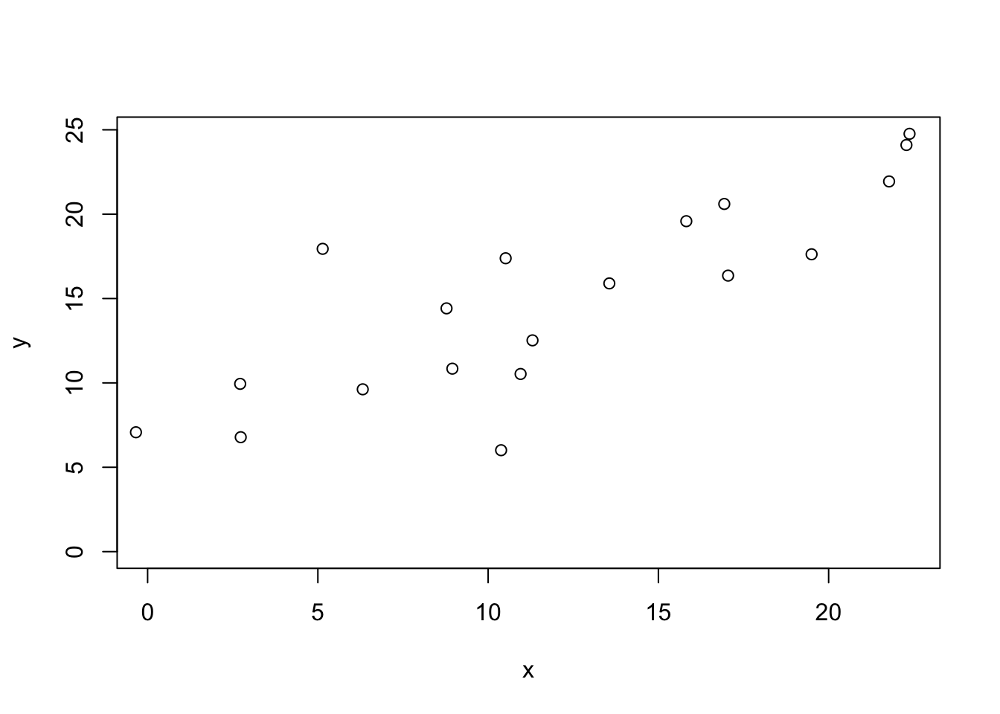
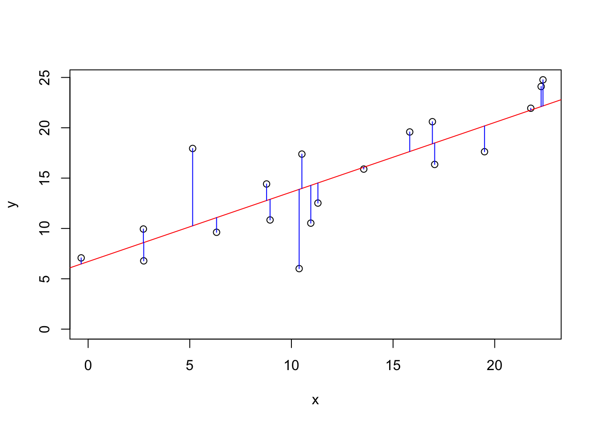
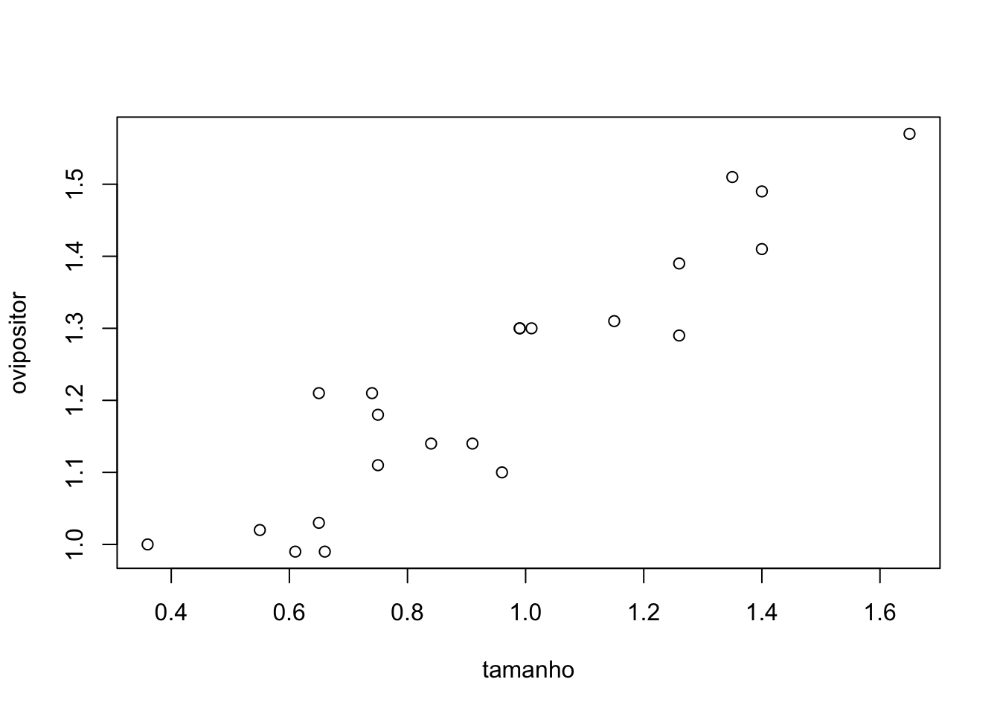
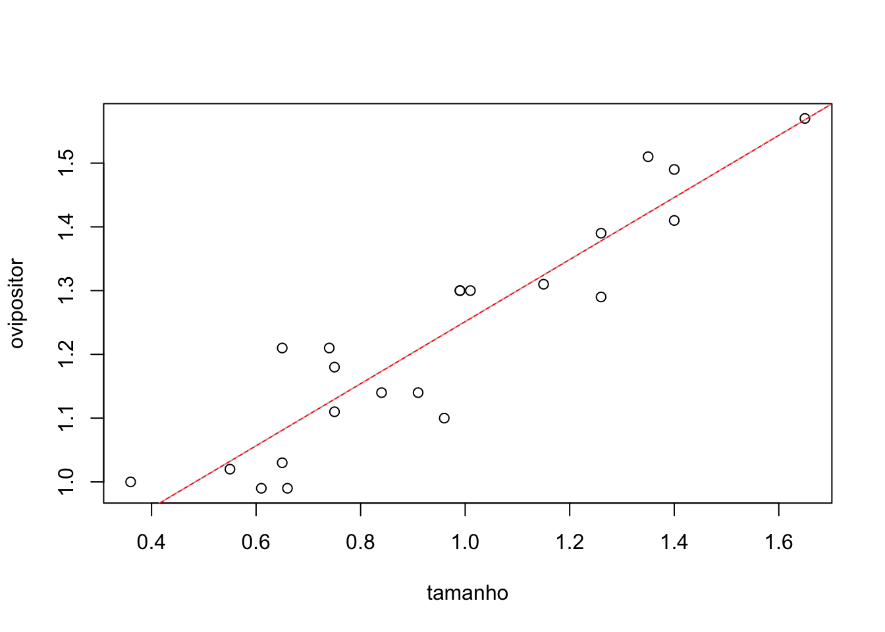
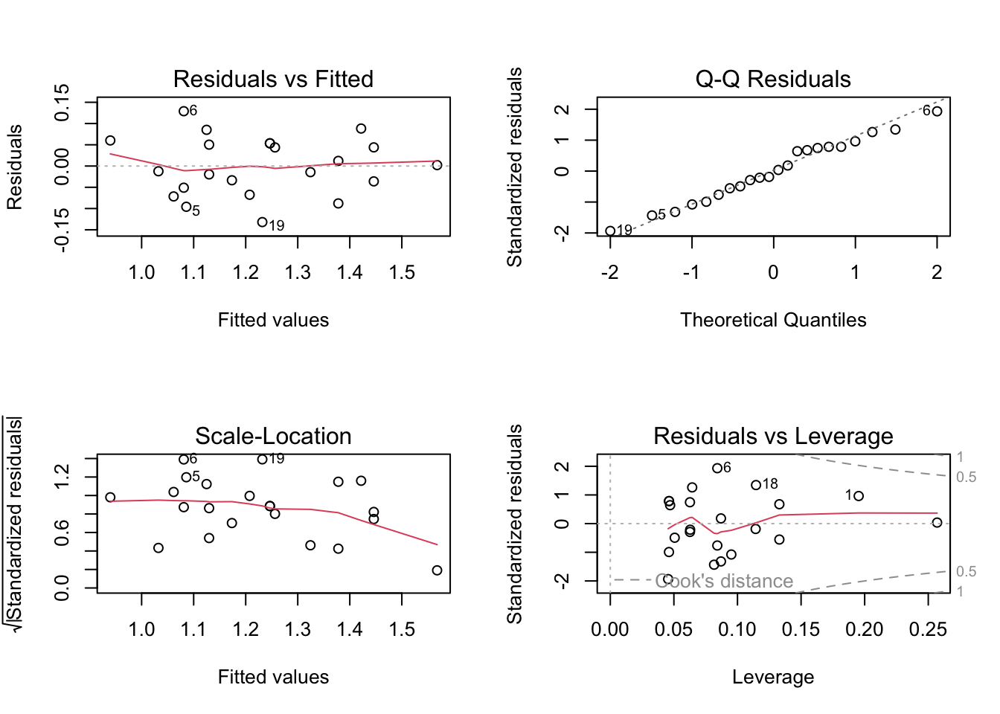
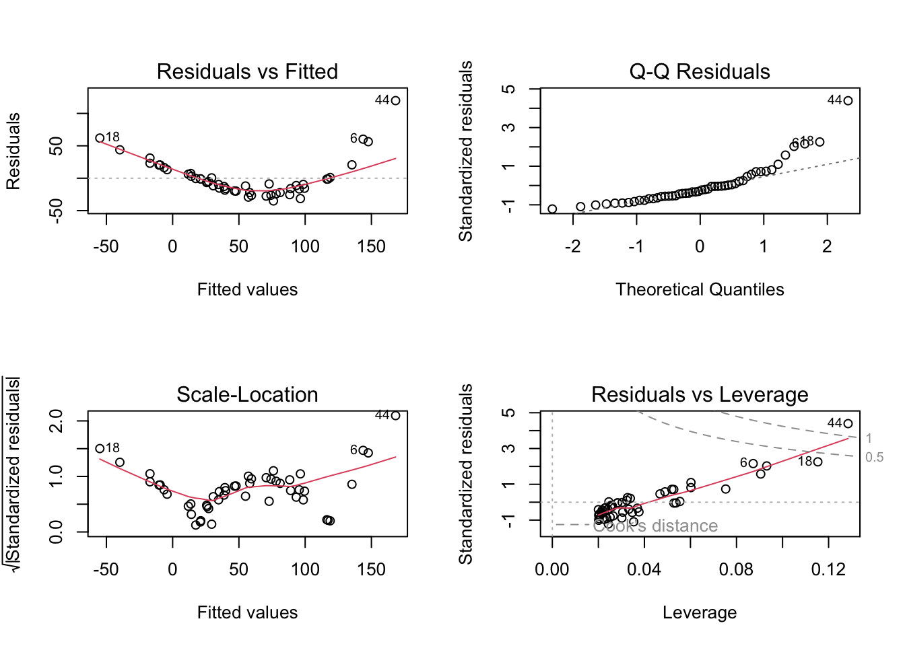
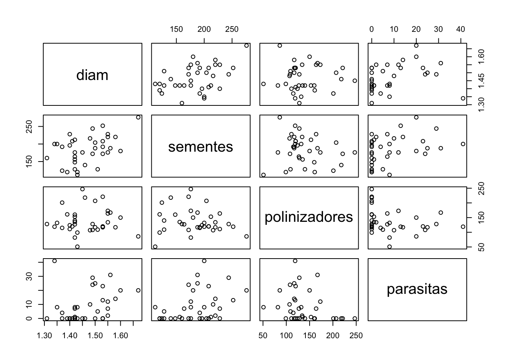
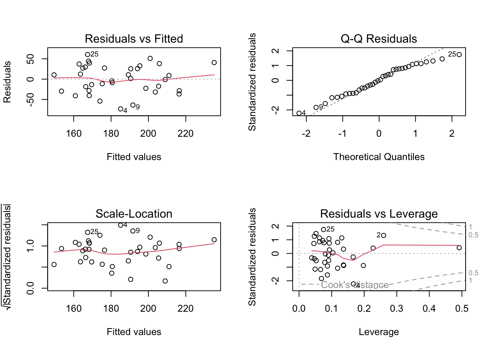
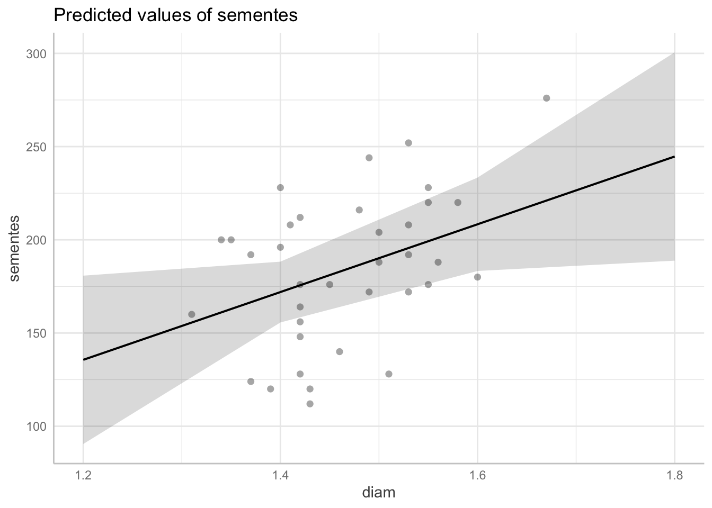
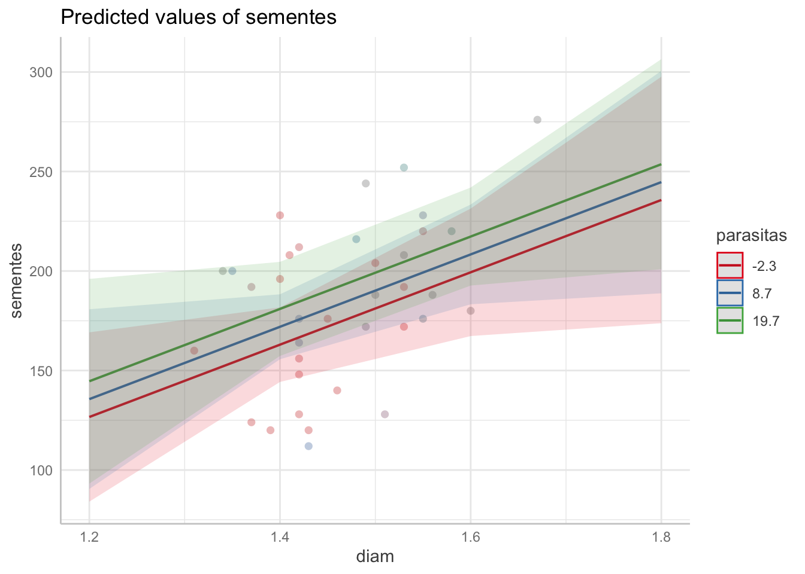

8 Modelos lineares e regressão
8.1 Modelos lineares - regressão linear
Modelos são utilizados para se fornecer um resumo simples de um conjunto de dados (Wickham et al., 2023). Podemos usar modelos para explicar relações entre variáveis.
Podemos descrever a relação entre x e y no exemplo abaixo (Figura 8.1):
No exemplo acima, estamos tentando encontrar uma relação entre duas variáveis:
Variáveis preditoras (\(x\)): variáveis quantitativas, também chamadas de variáveis dependentes.
Variável resposta (\(y\)): uma variável quantitativa a qual estamos interessados em descrever o efeito de x sobre ela. Também chamada de variável independente.
Análises de regressão são utilizadas quando queremos modelar a relação entre uma variável \(Y\) (variável resposta) e uma ou mais variáveis preditoras (Faraway, 2009).
Podemos observar que há uma relação positiva entre as variáveis x e y. Sempre que há um incremento (aumento) em x, temos um aumento em y. O tipo de relação observada entre essas variáveis parece ser linear, ou seja, podemos explicar a relação entre x e y com uma função linear do tipo:
Na função acima \(B_0\) representa o intercepto, ou o valor de \(Y\) para \(X = 0\). \(B_1\) representa a inclinação da reta, ou seja, sendo a taxa que \(Y\) vai aumentar em relação a \(X\). A variável \(\epsilon\) representa o erro, ou seja, o quanto os pontos se afastam da reta (Figura 8.2).

Na figura acima, temos a reta que cruza o eixo x no valor 6.7 (\(B_0\)) e tem uma inclinação de 0.69 (\(B_1\)). Os traços em azul mostram a diferença entre os valores observados e os preditos pela reta (\(\epsilon\)), que são chamados de resíduos.
8.2 Regressão linear simples
Utilizaremos a regressão linear para investigar se há uma relação entre o comprimento do ovipositor das vespas e o tamanho das inflorescências de Ficus nas quais elas ovipõem.
No conjunto de dados oviposicao, temos medições de duas variáveis (2 colunas) de valores contínuos: o ovipositor em milímetros e o diâmetro da inflorescência em centímetros.
library(readxl)
ovip <- read_excel("dados_R.xlsx", sheet = "oviposicao")
ovip #visualizar os dados no console# A tibble: 22 × 2
tamanho ovipositor
<dbl> <dbl>
1 0.36 1
2 0.55 1.02
3 0.65 1.03
4 0.61 0.99
5 0.66 0.99
6 0.65 1.21
7 0.75 1.18
8 0.74 1.21
9 0.91 1.14
10 0.75 1.11
# ℹ 12 more rows#podemos usar:
head(ovip) #para ver as primeiras linhas
colnames(ovip) # para ver o nome das variáveis (nome das colunas)
dim(ovip) #para observar o n. linhas e n. de colunasVamos observar em um gráfico de dispersão a relação entre as variáveis ovipositor e diametro (Figura 8.3).
plot(ovipositor ~ tamanho, data = ovip)

Parece haver correlação entre as variáveis. Vamos fazer uma análise de correlação:
cor.test(ovip$ovipositor, ovip$tamanho)
Pearson's product-moment correlation
data: ovip$ovipositor and ovip$tamanho
t = 10.629, df = 20, p-value = 1.124e-09
alternative hypothesis: true correlation is not equal to 0
95 percent confidence interval:
0.8180054 0.9673984
sample estimates:
cor
0.9217296 Há uma correlação forte e positiva entre as variáveis (r = 0.92, p < 10e-8), o que indica que as duas se relacionam positivamente.
Obs: o valor-p está em notação científica. Você pode transformar a notação:
format(1.124e-09, scientific = FALSE)[1] "0.000000001124"Vamos realizar uma análise de regressão linear para testar se o tamanho do ovipositor da espécie de vespa associada está relacionado com o tamanho da inflorescência.
A regressão é um tipo de modelo linear no qual testamos o efeito de variáveis contínuas sobre uma variável resposta que também é contínua. Este tipo de análise pode ser realizada utilizando a função lm() para ajustar um modelo linear (“linear model”).
Neste caso, vamos considerar a variável ovipositor como variável resposta (no eixo y) e tamanho como variável preditora (no eixo x) em um modelo:
modelo <- lm(ovipositor ~ tamanho, data= ovip)
modelo
Call:
lm(formula = ovipositor ~ tamanho, data = ovip)
Coefficients:
(Intercept) tamanho
0.7646 0.4868 Criando esse modelo, calculamos os seguintes coeficientes: o valor do intercepto (\(B_0\)) e o valor da inclinação da reta (\(B_1\)). Assim, podemos fazer o gráfico com a linha de regressão para o melhor modelo (Figura 8.4).
modelo$coefficients[1] #intercepto(Intercept)
0.7645629 modelo$coefficients[2] #inclinação tamanho
0.4868174 plot(ovipositor ~ tamanho, data= ovip)
abline(modelo$coefficients[1],modelo$coefficients[2], col = "red") #podemos utilizar os valoes coeficientes B0 e B1 calculados
#ou também podemos utilizar o modelo diretamente
abline(modelo, col = "grey", lty = 3)

8.2.1 Hipóteses testadas
Na regressão linear, ajustamos uma linha reta para explicar os valores de \(Y\) em função de \(X\). Nossa hipótese é que há alguma relação entre as variáveis. Consequentemente estamos criando uma hipótese sobre a inclinação da reta. Assim temos:
Testamos a hipótese da inclinação da reta (\(B_1\)) ser ou não ser igual a 0.
8.3 Informações da regressão
Podemos utilizar a função summary() para obter informações sobre a regressão:
summary(modelo)
Call:
lm(formula = ovipositor ~ tamanho, data = ovip)
Residuals:
Min 1Q Median 3Q Max
-0.131908 -0.047273 -0.005062 0.052697 0.129006
Coefficients:
Estimate Std. Error t value Pr(>|t|)
(Intercept) 0.76456 0.04596 16.63 3.52e-13 ***
tamanho 0.48682 0.04580 10.63 1.12e-09 ***
---
Signif. codes: 0 '***' 0.001 '**' 0.01 '*' 0.05 '.' 0.1 ' ' 1
Residual standard error: 0.06976 on 20 degrees of freedom
Multiple R-squared: 0.8496, Adjusted R-squared: 0.8421
F-statistic: 113 on 1 and 20 DF, p-value: 1.124e-09Neste resumo, temos as seguintes informações:
- Call: fórmula utilizada para a regressão.
- Residuals: estatística descritiva dos resíduos.
- Coefficients: valor dos coeficientes no caso intercept = \(B_0\) e tamanho = \(B_1\).
- Outros dados incluem o erro padrão dos resíduos, graus de liberdade, O \(R^2\) e \(R^2\) ajustado, e informações sobre o teste de hipótese do modelo linear (estatística f e valor-p).
Outro valor que estamos interessados é o coeficiente de determinação (\(R^2\)). Um valor de \(R^2\) de 0.85 como observado indica que 85% da variação de \(y\) é explicada por \(x\). Assim, é uma medida de o quanto o modelo explica nossos dados e a parte da variação que não é explicada.
Qual é o tamanho de ovipositor previsto quando o tamanho da inflorescência é 1,5 cm? Podemo calcular utilizando a equação \(Y = B_0+B_1x\), sendo que \(Y=0,76+0,49\cdot1,5=1,495\). Isso pede ser calculado utilizando a função predict:
predict(modelo, data.frame(tamanho = 1.5)) 1
1.494789 #múltiplos tamanhos
tamanhos <- data.frame(tamanho = c(0.7,0.9,1,1.5))
predict(modelo, tamanhos) 1 2 3 4
1.105335 1.202699 1.251380 1.494789 Obs: quando previmos os valores de \(y\) para o intervalo conhecido da variável \(x\), estamos fazendo uma interpolação. Caso desejássemos prever os resultados para um valor fora desse intervalo, fazemos uma extrapolação. A extrapolação exige uma abordagem mais cuidadosa devido à incerteza envolvida em prever além dos dados conhecidos (Gotelli & Ellison, 2016).
8.4 Diagnóstico do modelo
A regressão linear, como todos os modelos lineares, tem as seguintes premissas:
- As amostras são independentes.
- Os dados se encaixam em um modelo linear.
- Os resíduos estão homogeneamente distribuídos ao longo do eixo \(x\)
- Os resíduos apresentam distribuição normal.
O diagnóstico de modelos lineares também pode ser realizado com a função plot() (Figura 8.5).
par(mfrow = c(2,2)) #criar uma matriz de 4 janelas gráficas na mesma figura
plot(modelo) #plotar os 4 gráficos de diagnóstico de modelos

Os 4 gráficos que observamos são:
- Gráfico de dispersão entre os resíduo e os valores ajustado, que permite verificar a distribuição dos dados ao longo do eixo \(x\). Neste gráfico, os pontos devem estar aleatoriamente distribuídos.
- Gráfico quantil-quantil dos resíduos, que permite analisar a distribuição dos quantis observados com quantis teóricos de uma distribuição normal. Neste gráfico, os pontos devem estar próximos à linha.
- Gráfico de dispersão da raiz quadrada dos resíduos padronizado pelos valores ajustados, que permite verificar a homogeneidade das variâncias. Neste gráfico, os pontos devem estar aleatoriamente distribuídos.
- Distância de Cook das observações, que permite avaliar se há valores extremos que podem influenciar a análise. Neste gráfico, os valores extremos ultrapassam a linha pontilhada (distâncias de Cook).
Abaixo temos um exemplo de como os gráficos de diagnóstico do modelo ficariam no caso de haver violações na normalidade da distribuição dos resíduos (Figura 8.6). Para mais informações sobre a avaliação dos resíduos de regressão, consultar Jones et al. (2022).

Caso estejamos interessados, podemos realizar um teste de hipóteses para confirmar se a distribuição dos resíduos é normal:
shapiro.test(modelo$residuals)
Shapiro-Wilk normality test
data: modelo$residuals
W = 0.97832, p-value = 0.8878O teste de normalidade Shapiro-Wilk mostra que a distribuição dos resíduos observada não difere significativamente de uma distribuição normal a uma significância de 0.05 (5%).
8.5 Regressão múltipla
Em uma regressão linear múltipla analisamos a relação de uma variável resposta (\(Y\)) com mais de uma variável preditora (\(X_1\), \(X_2\) … \(X_p\)):
Para estudar modelos lineares de regressão múltipla utilizaremos o conjunto de dados figos. Neste conjunto, temos dados de abundância de polinizadores, sementes e parasitas em inflorescências de figos. Neste sistema, as vespas polinizadoras (polinizadores), apesar de realizarem a polinização, ocupam algumas flores para gerar sua prole. Além disso, vespas parasitas podem ocupar as flores, ocupando flores que se transformariam em sementes ou parasitar polinizadores. O número de flores e prole de vespas pode ser
library(readxl) #abrir pacote readxl
figos <- read_excel("dados_R.xlsx", sheet = "figos") #cria objeto chamado peixes com o conjunto de dados
head(figos)# A tibble: 6 × 4
diam sementes polinizadores parasitas
<dbl> <dbl> <dbl> <dbl>
1 1.58 220 117 14
2 1.67 276 86 20
3 1.6 180 150 20
4 1.43 112 51 8
5 1.49 172 108 24
6 1.35 200 132 8Vamos observar a relação entre as variáveis contínuas analisadas fazendo uma matriz de gráficos de dispersão (Figura 8.7).
pairs(figos)

Olhando a figura, podemos ver que parece existir alguma relação entre as variáveis.
Primeiramente, vamos realizar uma regressão múltipla para determinar o efeito de cada uma das variáveis sobre a quantidade de sementes:
modelo1 <- lm(sementes ~ diam + polinizadores + parasitas, data = figos)
summary(modelo1)
Call:
lm(formula = sementes ~ diam + polinizadores + parasitas, data = figos)
Residuals:
Min 1Q Median 3Q Max
-73.122 -28.278 0.247 28.065 60.558
Coefficients:
Estimate Std. Error t value Pr(>|t|)
(Intercept) -76.5226 115.4120 -0.663 0.5121
diam 181.7844 80.1752 2.267 0.0303 *
polinizadores -0.0949 0.1539 -0.617 0.5418
parasitas 0.8165 0.6137 1.331 0.1927
---
Signif. codes: 0 '***' 0.001 '**' 0.01 '*' 0.05 '.' 0.1 ' ' 1
Residual standard error: 36.01 on 32 degrees of freedom
Multiple R-squared: 0.2599, Adjusted R-squared: 0.1905
F-statistic: 3.745 on 3 and 32 DF, p-value: 0.02058Podemos observar que o total de sementes parece estar relacionado com o diâmetro da inflorescência. As demais variáveis parecem não estar relacionadas com a produção de sementes na inflorescência. O diagnóstico do modelo indica que o modelo linear ajustou bem aos dados (Figura 8.8)
par(mfrow = c(2,2))
plot(modelo1)

8.5.1 Visualização do modelo
O modelo pode ser visualizado com um gráfico de dispersão incluindo as variáveis de interesse. No exemplo anterior utilizamos as funções plot() e abline() para criar o gráfico. Entretanto, como temos aqui múltiplas variáveis, a alternativa mais prática é: (1) verificar as predições do modelo da variável resposta para os valores das variáveis preditoras que estamos interessados e (2) plotar um gráfico de dispersão incluindo a linha de tendência prevista pelo modelo. Isso pode ser feito facilmente com o pacote ggeffects (Figura 8.9).
library(ggeffects)#carregar o pacote
#verificar os valores previstos pelo modelo com ggpredict.
modelo1.pred.area <- ggpredict(modelo1, terms = "diam")
modelo1.pred.area
#plotar o gráfico incluindo também os dados observados
plot(modelo1.pred.area, rawdata = TRUE) Warning: Argument `rawdata` is deprecated and will be removed in the future.
Please use `show_data` instead.Data points may overlap. Use the `jitter` argument to add some amount of
random variation to the location of data points and avoid overplotting.#criar gráfico do modelo para a variável "diam" e "parasitas"
modelo1.pred.area.no3 <- ggpredict(modelo1, terms = c("diam", "parasitas"))
plot(modelo1.pred.area.no3, rawdata = TRUE)Warning: Argument `rawdata` is deprecated and will be removed in the future.
Please use `show_data` instead.Data points may overlap. Use the `jitter` argument to add some amount of
random variation to the location of data points and avoid overplotting.# Predicted values of sementes
diam | Predicted | 95% CI
---------------------------------
1.20 | 135.63 | 90.48, 180.77
1.40 | 171.98 | 155.67, 188.29
1.60 | 208.34 | 183.29, 233.39
1.80 | 244.70 | 188.81, 300.58
Adjusted for:
* polinizadores = 137.97
* parasitas = 8.69


8.6 Comparação de modelos
8.6.1 Comparação de modelos com a função anova()
Podemos comparar diferentes modelos aninhados com a função anova(). Vamos remover uma das variáveis menos significativas do modelo para ver se temos uma melhora significativa nele.
Para isso, utilizaremos a função update() vamos atualizar o modelo1 de forma a remover a variável polinizadores:
modelo2 <- lm(sementes ~ diam + parasitas, data = figos)
#ou
modelo2 <- update(modelo1, .~.-polinizadores)Os dois comandos acima fazem a mesma coisa. Na notação utilizando a função update(), atualizamos o modelo1, o sinal “. ~ .” indica que mantemos as variáveis que apresentava antes e “-polinizadores” indica a remoção de polinizadores do modelo.
anova(modelo2, modelo1)Analysis of Variance Table
Model 1: sementes ~ diam + parasitas
Model 2: sementes ~ diam + polinizadores + parasitas
Res.Df RSS Df Sum of Sq F Pr(>F)
1 33 41988
2 32 41495 1 493.09 0.3803 0.5418Podemos ver que os modelos não são significativamente diferentes (F = 0,38; P = 0.54) desta forma, damos preferência ao modelo mais simples (com menos variáveis), ou seja, o modelo2.
Atenção: para a comparação de modelos com ANOVA, os modelos devem ser aninhados, ou seja, as variáveis dependentes devem ser incluídas uma a uma.
8.6.2 Comparando modelos por utilizando o Critério de Informação de Akaike (AIC)
O critério de informação de Akaike é uma medida baseada na teoria da informação que pode ser usado para comparar modelos. Este critério mede o equilíbrio entre o acréscimo de variáveis em um modelo e o quanto esse acréscimo explica melhor o modelo. Utilizando este critério, podemos comparar os diversos modelos de forma a decidir qual explica melhor a variação da variável resposta. Este critério penaliza o acréscimo de variáveis pouco informativas em um modelo. Para mais informações sobre o AIC, consulte Aho et al. (2014).
Vamos criar outros modelos removendo variáveis pouco significativas:
modelo1 #já criado
Call:
lm(formula = sementes ~ diam + polinizadores + parasitas, data = figos)
Coefficients:
(Intercept) diam polinizadores parasitas
-76.5226 181.7844 -0.0949 0.8165 modelo2 #já criado
Call:
lm(formula = sementes ~ diam + parasitas, data = figos)
Coefficients:
(Intercept) diam parasitas
-81.2701 175.4205 0.9298 modelo3 <- update(modelo2, .~.-parasitas)
modelo.nulo <- lm(sementes ~ 1, data = figos) # modelo vazio
# quanto menor o valor de Akaike, melhor o modelo
AIC(modelo1, modelo2, modelo3, modelo.nulo) df AIC
modelo1 5 365.9563
modelo2 4 364.3816
modelo3 3 365.0810
modelo.nulo 2 370.7899#install.packages('wiqid') #se o pacote não foi instalado
library(wiqid)Loading required package: HDIntervalLoading required package: mcmcOutputAICtable(AIC(modelo1, modelo2, modelo3, modelo.nulo)) # tabela do AIC df AIC Delta ModelLik ModelWt
modelo2 4 364.382 0.000 1.000 0.454
modelo3 3 365.081 0.699 0.705 0.320
modelo1 5 365.956 1.575 0.455 0.207
modelo.nulo 2 370.790 6.408 0.041 0.018Neste caso, modelo2 apresentou o menor AIC, entretanto os modelos 1,2 e 3 foram igualmente bons (\(\Delta AIC\) < 2), e melhores que o modelo nulo, no qual a variável resposta foi testada em função de uma constante.
8.6.3 Seleção de modelos com step()
Podemos selecionar automaticamente um modelo otimizado por AIC utilizando a função step, partindo do modelo mais complexo:
modelo.select <- step(modelo1)Start: AIC=261.79
sementes ~ diam + polinizadores + parasitas
Df Sum of Sq RSS AIC
- polinizadores 1 493.1 41988 260.22
- parasitas 1 2295.6 43790 261.73
<none> 41495 261.79
- diam 1 6666.2 48161 265.16
Step: AIC=260.22
sementes ~ diam + parasitas
Df Sum of Sq RSS AIC
<none> 41988 260.22
- parasitas 1 3269.4 45257 260.92
- diam 1 6312.2 48300 263.26summary(modelo.select)
Call:
lm(formula = sementes ~ diam + parasitas, data = figos)
Residuals:
Min 1Q Median 3Q Max
-65.020 -31.119 1.822 29.634 63.681
Coefficients:
Estimate Std. Error t value Pr(>|t|)
(Intercept) -81.2701 114.0685 -0.712 0.4812
diam 175.4205 78.7581 2.227 0.0329 *
parasitas 0.9298 0.5800 1.603 0.1185
---
Signif. codes: 0 '***' 0.001 '**' 0.01 '*' 0.05 '.' 0.1 ' ' 1
Residual standard error: 35.67 on 33 degrees of freedom
Multiple R-squared: 0.2511, Adjusted R-squared: 0.2057
F-statistic: 5.532 on 2 and 33 DF, p-value: 0.008477O algoritmo foi removendo as variáveis menos explicativas até chegar ao modelo que apresentou o melhor AIC. O modelo selecionado automaticamente a partir do modelo completo (modelo1). Vamos visualizar este modelo:
summary(modelo.select)
Call:
lm(formula = sementes ~ diam + parasitas, data = figos)
Residuals:
Min 1Q Median 3Q Max
-65.020 -31.119 1.822 29.634 63.681
Coefficients:
Estimate Std. Error t value Pr(>|t|)
(Intercept) -81.2701 114.0685 -0.712 0.4812
diam 175.4205 78.7581 2.227 0.0329 *
parasitas 0.9298 0.5800 1.603 0.1185
---
Signif. codes: 0 '***' 0.001 '**' 0.01 '*' 0.05 '.' 0.1 ' ' 1
Residual standard error: 35.67 on 33 degrees of freedom
Multiple R-squared: 0.2511, Adjusted R-squared: 0.2057
F-statistic: 5.532 on 2 and 33 DF, p-value: 0.008477O método de seleção automático utilizando step() deve ser utilizado com cautela. Este modelo selecionado automaticamente pode ser considerado um ponto de partida interessante, entretanto é necessário cautela e conhecimento do sistema estudado para avaliar pela inclusão ou remoção de variáveis. Para uma discussão sobre tais métodos, veja Magnusson (2003) .
8.7 Multicolinearidade
Uma das premissas dos modelos lineares é a independência dos preditores. Em uma regressão múltipla, quando temos duas ou mais variáveis preditoras correlacionadas, chamamos esse fenômeno de colinearidade. Quando dois ou mais preditores são correlacionados, podemos ter estimativas instáveis dos parâmetros no modelo. Vamos testar se há colinearidade entre as variáveis analisadas.
A possibilidade de colinearidade pode ser levantada quando há existência de uma alta correlação entre variáveis:
cor(figos) diam sementes polinizadores parasitas
diam 1.00000000 0.4390444 0.02717289 0.3280142
sementes 0.43904445 1.0000000 -0.14976790 0.3721390
polinizadores 0.02717289 -0.1497679 1.00000000 -0.2737100
parasitas 0.32801421 0.3721390 -0.27371004 1.0000000O pacote performance pode ser utilizado para checar a existência de multicolinearidade, avaliando o fator de inflação da variância (variance inflation factor - VIF):
#install.packages("performance") #se o pacote ainda não tiver instalado
library(performance)
check_collinearity(modelo1)# Check for Multicollinearity
Low Correlation
Term VIF VIF 95% CI Increased SE Tolerance Tolerance 95% CI
diam 1.14 [1.01, 2.66] 1.07 0.88 [0.38, 0.99]
polinizadores 1.10 [1.00, 3.60] 1.05 0.91 [0.28, 1.00]
parasitas 1.23 [1.04, 2.28] 1.11 0.81 [0.44, 0.96]O VIF na faixa de 1 indica a inexistência de colinearidade, entre as variáveis, enquanto um valor entre 1 e 5 indicam colinearidade moderada. Um índice de 5 indica alta colinearidade entre variáveis.
8.8 Conclusão
Neste capítulo, exploramos os fundamentos dos modelos lineares e da regressão linear, tanto simples quanto múltipla, para analisar relações entre variáveis. Aprendemos a ajustar modelos lineares utilizando a função lm(), interpretar coeficientes, avaliar a significância estatística e diagnosticar a adequação do modelo por meio de gráficos de resíduos e testes de normalidade. Também discutimos a importância de comparar modelos utilizando critérios como o AIC e a função anova(), além de abordar a seleção de modelos com a função step(). Por fim, destacamos a questão da multicolinearidade e como ela pode afetar a estabilidade dos modelos.